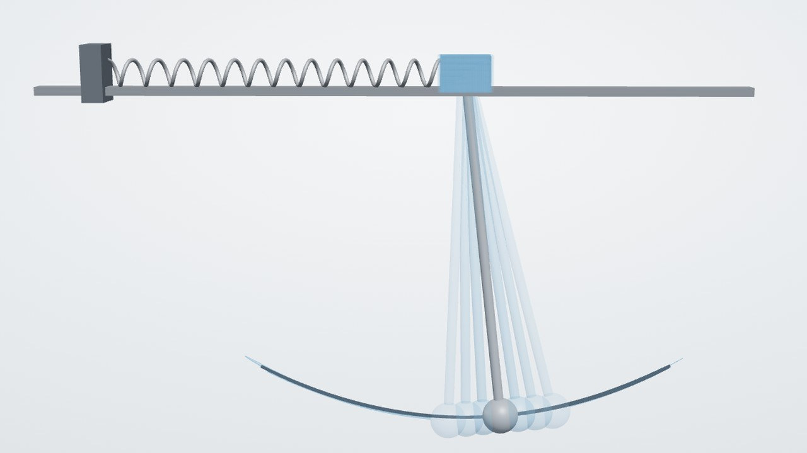
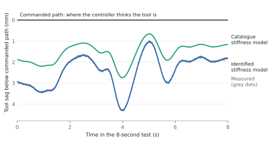
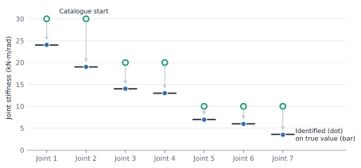
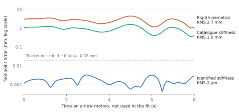

Parameter sensitivities
How motion and joint loads change with spring and bushing stiffness and damping, computed analytically along the whole trajectory.

What they are for
Understanding compliance
How a stiffness or damping coefficient changes displacement, velocity, acceleration and reaction forces at every instant.
Calibration and design
Gradients are the building blocks for parameter fitting and design studies. The robot case below is a complete fit on simulated data; a fit to a real machine still has to be checked against its measurements.
Case study: joint stiffness of a robot arm
A robot arm is not rigid. Its joints twist under the weight of the arm and the tool, so the tool ends up millimetres from where the controller puts it. For drilling, machining or any task that needs absolute accuracy, that gap matters. Robot makers rarely publish joint stiffness, and a gear catalogue value is not the stiffness of the whole joint.
One joint is especially hard to measure. The base turns about a vertical axis, so gravity puts no load on it and a static test cannot see its stiffness. Only the inertial loads of a moving arm reveal it.
Here a 7-joint arm carries a 3 kg tool mounted to one side and runs a single 8-second motion of all joints. A laser tracker records the tool point at 100 times a second with 20 µm noise. Starting from catalogue values that are up to almost three times too stiff, a gradient-based fit recovers all seven joint stiffnesses in two iterations, each one simulation with its gradients.



The test data are simulated from the same model, with tracker noise added, and joint damping is taken as known. A real arm adds friction, backlash and link flexibility, which a model for measured data would have to include.
How they are checked
Each derivative is compared with independent perturbed simulations over 30-second runs, for springs and for all 12 bushing coefficients. For motion they agree to about one part in ten million of the peak response.
For the robot arm, including its motor-driven joints, the gradients agree with perturbed runs to a few parts in a million, the accuracy of the perturbed runs themselves.
These are numerical checks of the derivatives. They say nothing about hardware accuracy.
Scope
Covered today
Spring stiffness and damping and the 12 diagonal bushing coefficients, with revolute, spherical and translational joints and motor-driven rotary joints.
Not covered yet
Other prescribed motions, contact, controllers, redundant constraints and adaptive step decisions.
Validation tables, the robot case in full and the scope. 6 pages.
Have a parameter question?
Send a short description of the mechanism and the parameters that matter. You’ll get a written note on whether ManifoldsX fits and what a pilot study would involve.
manifoldsx.eng@gmail.com